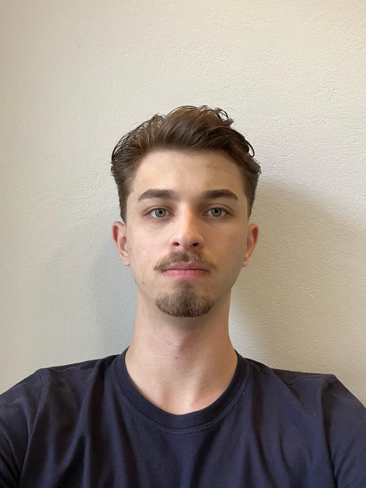

Lucas Kremer Wilbert

Brasileiro, solteiro, 20 anos, Telefone: (51)99341-6608.
Email: lucaskremer05@gmail.com
Tech Leads
Linguagens:
- HTML5
- CSS
- JavaScript
- Python
- SQL
- TypeScript
Frameworks/Ferramentas:
- React.js
- Node.js
- Figma
- Vue.js
Projetos Pessoais
Currículo próprio
Acredito que o meu primeiro projeto pessoal, tenha sido o meu próprio currículo, esse em que você está lendo. Fiz
ele com o objetivo de facilitar a atualização de dados, cursos, etc. Além de que acredito ser mais profissional e apresentável para o mercado de trabalho que convivemos.
Este projeto, tem como base um curso em que estou realizando na Udemy.
Projeto Bottanopé Shoes Store - Em Desenvolvimento
Esse projeto é baseado em realizar a confecção do E-Commerce de uma loja da minha familia, que realmente existe, confeccionada apenas como hobby,
porém, futuramente possa ser uma inspiração para a expansão da loja para a internet. Esse projeto tem como objetivo, aplicar alguns recursos que eu aprendo no faculdade,
ou seja, "colocar em prática" o que é ensinado pelos professores.
Objetivo
O meu objetivo profissional é ingressar na área da tecnologia como Desenvolvedor Front End, principalmente, e Desenvolvedor Back-end, para que eu possa desenvolver a minha própria carreira.
Cursos / Especializações
Experiência profissional
Recepcionista no turno da tarde
- Nesta função, eu realizava tarefas como atendimento ao público, atendimento telefônico, organização de horários de pacientes, gerenciamento de assinaturas e registros de presenças no portal da Unimed.
- Cargo horária de 5 horas
Office boy do escritório de Igrejinha e Gramado
- Neste cargo, responsabilizaram-me de transportar documentos, levar clientes para perícias, ficar na recepção para receber os clientes, gerenciar listas de transmissão e redes sociais do escritório.
- Cargo horária de 8 horas
Formação
Ensino Médio Completo
Graduando em Sistemas de Informação - 40% do curso concluído
Idiomas
Inglês:
Nível: stricto sensu - Intermediário/Avançado, certificado pela prova de proeficiência da língua inglesa pelo Programa de Pós-Graduação em Desenvolvimento Regional das Faculdades Integradas de Taquara.
Alemão:
Nível A1: Iniciante, pouco contato com a língua, estudei durante o Ensino Fundamental, as aulas de alemão estavam incluídas na grade curricular da minha escola.